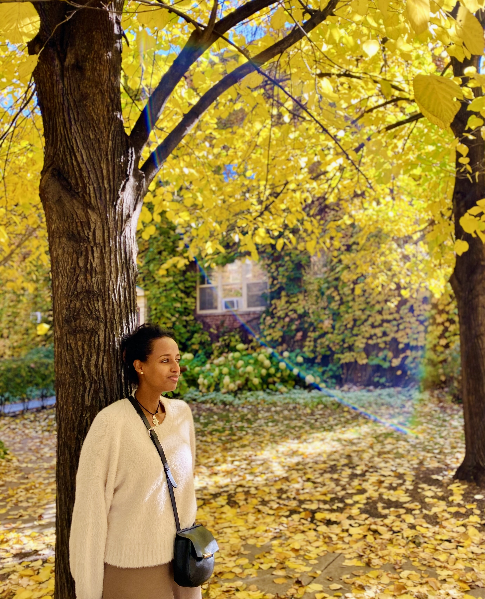

Tsion Seyoum
My name is Tsion Seyoum, originally from Ethiopia, where I spent my formative years in the capital city, Addis Ababa. Education has always been a priority for me, and I completed my undergraduate studies in Electrical Engineering in Ethiopia. However, the desire to further my education never left me, and now, I am thrilled to be back in school pursuing my long-held dreams. In 2017, I embarked on a new chapter of my life by moving to the United States, where I now reside in Mchenry, Illinois, with my husband and our four children. While adjusting to life in a new country has had its challenges, there are many aspects of the U.S. that I have come to appreciate, particularly the distinct seasons. Fall holds a special place in my heart, as it showcases nature's breathtaking display of colors—a sight I never experienced back home. Outside of academics and family life, I have diverse interests that bring joy to my days. Photography allows me to capture the beauty of the world around me while traveling provides me with valuable experiences and memories. Additionally, my fascination with vintage cars fuels my passion for classic automotive design and engineering. These hobbies serve as outlets for creativity and exploration in my life.
